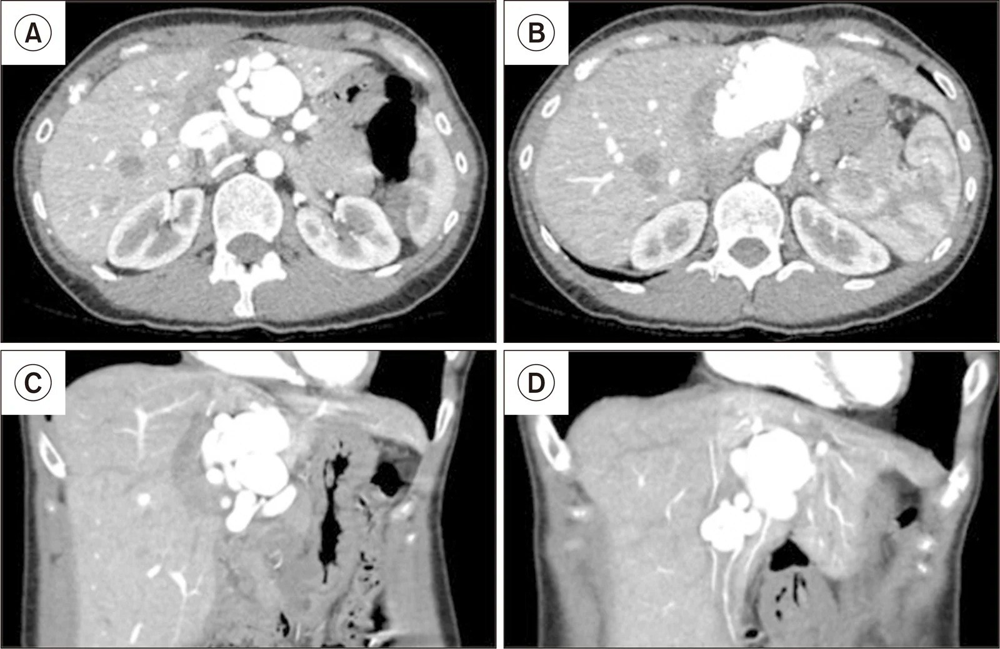
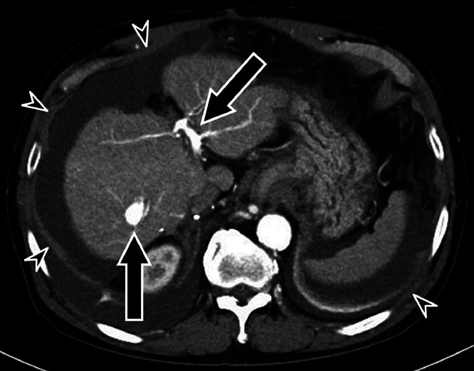
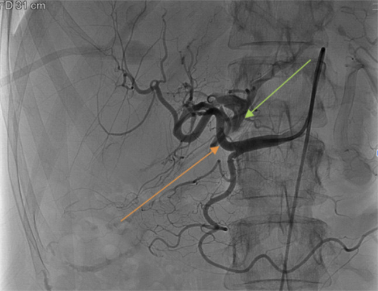

1841 — Rò động mạch gan–tĩnh mạch cửa sau sinh thiết/can thiệp gan & sau ghép gan / Hepatic arterioportal fistula (APF)
Tags: pattern:ro-dong-tinh-mach pattern:ngam-thuoc-som vung:gan vung:o-bung score:PSV-ratio protocol:CTA-3-thi protocol:Doppler-sieu-am protocol:DSA incidentaloma:khong
Mức chắc chắn (certainty): tổng hợp y văn (literature synthesis) — 1 loạt 97 ca người lớn (J Clin Transl Hepatol 2022, PMC9396316, CC BY-NC), 1 loạt nhi 23 bệnh nhân/24 rò sau ghép gan (J Clin Med 2021, PMC8231897, CC BY), 1 tổng quan hình ảnh biến chứng mạch sau ghép gan (Insights Imaging 2019, PMC6694376, CC BY) và 3 ca nguyên văn có ảnh (PMC10901427 CC BY; PMC13490747 CC BY-NC; PMC10955095 CC BY-NC-ND). Nhóm không có bệnh nhân của mình; chỗ nguồn lệch nhau (ngưỡng can thiệp, tỉ lệ tự đóng) được ghi là mâu thuẫn nguồn, không chọn bừa.
Câu chốt: rò động mạch gan–tĩnh mạch cửa (arterioportal fistula, APF) là đường thông trực tiếp giữa động mạch gan áp lực cao và tĩnh mạch cửa áp lực thấp; vì vậy nó vừa cướp máu khỏi nhu mô gan vừa đẩy áp lực vào hệ cửa. Ba số phải thuộc: (1) trong 97 ca, 78/97 (80,1%) rò liên quan HCC, 10/97 (10,3%) xơ gan, và 81/97 có triệu chứng tăng áp cửa — tức đa số gặp trên gan bệnh, không phải gan lành (PMC9396316); (2) ở trẻ sau ghép gan, 20/23 (87%) là bệnh nhân ghép gan và 16/20 rò do thủ thuật, 13 ca do sinh thiết (PMC8231897); (3) tiêu chuẩn can thiệp thực dụng: shunt > 1 cm, RI < 0,5 hoặc đảo dòng tĩnh mạch cửa trên Doppler, hoặc triệu chứng tăng áp cửa — rò nhỏ, không triệu chứng thì theo dõi, vì 4/12 ca trong nhóm bảo tồn tự đóng (PMC8231897). Nghĩa là: chẩn đoán bằng thì động mạch, quyết định bằng huyết động + triệu chứng, điều trị bằng nút mạch chọn lọc.
1. Tổng quan bệnh học – cơ chế hình ảnh
1.1 Vì sao một lỗ rò nhỏ lại gây tăng áp cửa
- Bình thường động mạch gan có áp lực 90–120 mmHg, còn tĩnh mạch cửa chỉ 5–10 mmHg (chênh ~10–20 lần). Gan nhận ~75% lưu lượng từ tĩnh mạch cửa nhưng cửa chỉ mang ~50% oxy; động mạch gan tuy chỉ 25% lưu lượng lại mang 50% oxy và là nguồn duy nhất nuôi đường mật.
- Khi có rò, máu động mạch đổ thẳng vào cửa theo gradient áp lực. Hệ quả kép: (a) áp lực cửa tăng → cổ trướng, giãn tĩnh mạch thực quản, lách to, giảm tiểu cầu; (b) dòng cửa bị "pha loãng" bởi máu động mạch và có thể đảo chiều, làm giảm tưới máu nhu mô và teo mô gan về lâu dài. Ca sau cắt gan của Okuhira: rò giữa A7 và tĩnh mạch cửa phải gây cổ trướng lượng lớn và suy chức năng gan chỉ 6 tháng sau mổ; sau nút mạch, cân nặng và vòng bụng giảm ngay, albumin và PT tăng, bilirubin giảm trong 22 ngày (PMC10955095).
- Về mô bệnh, dòng động mạch áp lực cao lâu năm làm động mạch hóa thành tĩnh mạch cửa: nội mạc dày xơ–nhầy (fibromyxoid intimal thickening), cơ trơn tăng sinh, mạch nuôi mạch (vasa vasorum) tăng. Ca Florou cho thấy tổn thương tiến triển 17 năm sau một lần sinh thiết gan, cuối cùng thành phình mạch 27 mm và phải cắt gan trái (PMC13490747). Đây là lý do không được coi "rò nhỏ sau sinh thiết" là chuyện vô hại ở mọi bệnh nhân.
1.2 TẠI SAO thì động mạch bắt được rò — và vì sao đậm độ lại quan trọng
- Vật lý thời gian: thuốc cản quang bơm tĩnh mạch đến động mạch gan ở 20–30 giây, đến tĩnh mạch cửa qua tuần hoàn mạc treo ở 60–70 giây. Khi có rò, thuốc đi tắt qua lỗ rò và làm đầy tĩnh mạch cửa ngay trong thì động mạch, sớm hơn bình thường 30–40 giây. Vì vậy dấu chốt trên CT là tĩnh mạch cửa ngấm thuốc ở thì động mạch, đậm độ tiệm cận động mạch chủ (không phải "hơi tăng nhẹ"), kèm đoạn cửa trước rò đậm hơn cửa sau rò.
- Không có ngưỡng HU được kiểm chứng cho APF: các bài gốc mô tả định tính "early enhancement of the portal vein", không đưa cut-off HU. Vì vậy trong bài này không bịa ngưỡng HU; thay vào đó dùng 3 dấu định lượng có nguồn: (a) đậm độ cửa ≈ ĐMC ở thì động mạch; (b) đảo dòng/ hai chiều trên Doppler; (c) RI < 0,5 ở nhánh cấp máu (PMC8231897).
- TẠI SAO Doppler thấy RI thấp: rò là một đường thoát trở lực rất thấp nối vào giường mạch; trở lực hạ lưu giảm → chỉ số trở lực (resistive index, RI) giảm < 0,5, phổ động mạch trở nên giảm trở lực, tăng dòng tâm trương. Khi áp lực cửa vượt áp lực dòng mạc treo, dòng cửa đảo chiều (hepatofugal) hoặc hai chiều — đây là dấu huyết động mạnh hơn kích thước lỗ rò.
- Phân loại 3 thể (dùng trong loạt 97 ca): type 1 — rò nhỏ ngoại vi trong gan (thường sau sinh thiết); type 2 — rò lớn trung tâm ở nhánh cửa chính; type 3 — rò lan tỏa/bẩm sinh. Trong 97 ca: 4 type 1, 91 type 2, 2 type 3 — phản ánh dân số chọn lọc của trung tâm can thiệp, không phải tỉ lệ ngoài cộng đồng (PMC9396316).
1.3 Nguyên nhân — "iatrogenic trước, bệnh gan sau"
| Nhóm | Nguyên nhân hay gặp | Ghi chú định lượng |
|---|---|---|
| Do thủ thuật (iatrogenic) | sinh thiết gan qua da, đặt dẫn lưu mật qua da (PTBD), TACE/TARE, cắt gan, ghép gan, đặt stent cửa | Ở trẻ ghép gan: 16/20 rò do thủ thuật, 13 do sinh thiết (PMC8231897) |
| Bệnh gan nền | HCC (đặc biệt HCC xâm lấn cửa), xơ gan, u mạch, chấn thương | 78/97 (80,1%) do HCC; 10/97 (10,3%) xơ gan (PMC9396316) |
| Bẩm sinh / hội chứng | dị dạng mạch, HHT (Rendu–Osler–Weber) | APF gặp ở tới 30% bệnh nhân HHT (PMC8231897 dẫn y văn) |
- Sau ghép gan là bối cảnh đặc biệt: biến chứng mạch gặp ~7% ở ghép gan người chết não và ~13% ở ghép gan sống (PMC6694376); hẹp tĩnh mạch cửa riêng ở trẻ 7,6% (67/884) (bài 1827). APF sau ghép thường do sinh thiết theo dõi hoặc do miệng nối; vì vậy mọi tăng áp cửa mới sau ghép phải loại trừ APF trước khi quy cho thải ghép.
- Thời điểm: có thể sớm vài tuần hoặc rất muộn. Ca nguyên văn ghi nhận 17 năm sau sinh thiết (PMC13490747) và 6 tháng sau cắt gan (PMC10955095). Vì vậy "sinh thiết cách đây nhiều năm" không loại trừ APF.
2. Mẫu hình + chẩn đoán phân biệt theo vị trí (gamut)
- Rò ngoại vi (type 1, sau sinh thiết): ổ ngấm thuốc nhỏ ở ranh giới gan–bao gan, thường < 1 cm, có thể chỉ thấy một nhánh cửa nhỏ đậm lên thì động mạch. Đa số không triệu chứng; một phần tự đóng (4/12 ca bảo tồn — PMC8231897). Vị trí hay gặp: hạ phân thùy VI/VII sát bao gan (đường kim).
- Rò trung tâm lớn (type 2): ổ rò ở rốn gan/nhánh cửa chính, thường có phình mạch nuôi; gây tăng áp cửa rõ, cổ trướng, giãn TMTQ; đây là nhóm phải can thiệp. Trong loạt 97 ca, 91/97 là type 2 (PMC9396316).
- Rò lan tỏa/bẩm sinh (type 3): nhiều ổ, thường kèm HHT, suy tim cung lượng cao, tím; can thiệp khó, cần đánh giá toàn thân và có thể phải ghép gan.
- Theo vị trí giải phẫu: (a) trong gan (phần lớn, sau sinh thiết/cắt gan); (b) rốn gan (sau PTBD/phẫu thuật); (c) quanh miệng nối sau ghép; (d) lách–cửa (rò động mạch lách–tĩnh mạch lách, hiếm, sau chấn thương/phẫu thuật).
- Bắt chước quan trọng nhất — THAD (transient hepatic attenuation difference): vùng gan tăng đậm độ hình nêm ở thì động mạch do thay đổi tưới máu, không có đường thông thật; tĩnh mạch cửa không đậm sớm và không đảo dòng. Đây là lý do không được gọi APF chỉ vì "có vùng tăng đậm độ thì động mạch".
- Bắt chước khác: shunt trong HCC (u + huyết khối cửa), huyết khối cửa mạn với động mạch bù trừ, giả phình động mạch gan (không có cửa đậm sớm), u mạch máu (ngấm hướng tâm, không đảo dòng), dị dạng động–tĩnh mạch gan.
3. Bảng so sánh phân biệt (ma trận đối chiếu)
| Thực thể (entity) | Hình ảnh điển hình (CTA/Doppler/DSA) | Chốt vào (rule-in) | Chốt loại (rule-out) | Gợi ý xác nhận |
|---|---|---|---|---|
| APF ngoại vi type 1 (sau sinh thiết) | Ổ nhỏ < 1 cm sát bao gan; một nhánh cửa ngoại vi đậm thì động mạch; Doppler RI thấp tại nhánh nuôi | Ổ rò + cửa ngoại vi đậm sớm + tiền sử sinh thiết đúng vị trí | Cửa chỉ đậm thì cửa, không đảo dòng → không phải rò | Doppler 3–6 tháng; DSA chỉ khi có huyết động bất thường |
| APF trung tâm type 2 | Ổ rò lớn ở rốn gan, phình mạch nuôi, cửa chính đậm sớm; cổ trướng/lách to | Cửa chính đậm thì động mạch + đảo dòng + tăng áp cửa | Chỉ giãn cửa do huyết khối, không có ổ rò → không phải APF | CTA 3 thì + DSA; đo áp lực cửa nếu cần |
| THAD (giả tổn thương tưới máu) | Vùng hình nêm tăng đậm độ thì động mạch, mờ dần thì cửa, không có mạch máu bất thường | Hình nêm + mất dần + không đảo dòng cửa | Cửa đậm sớm + ổ rò thấy trên DSA → APF thật | So sánh thì động mạch/cửa; Doppler bình thường |
| HCC có shunt động–cửa | Khối ngấm mạnh thì động mạch + thải thuốc; nhánh cửa trong u đậm sớm; có thể huyết khối cửa | Khối HCC + washout + shunt trong u | Nhu mô gan lành, không khối, không washout → APF đơn thuần | MRI gan (Primovist), AFP, sinh thiết nếu mơ hồ |
| Giả phình động mạch gan | Túi ngấm thuốc thì động mạch, giữ hình thì cửa, không có cửa đậm sớm | Túi giữ thuốc + không thấy cửa sớm | Cửa đậm sớm + đảo dòng → có kèm rò | CTA/DSA; theo dõi vỡ |
| Rò lách–cửa / HHT | Nhiều ổ, lách to, dòng cửa tăng; bệnh sử chảy máu mũi, telangiectasia | Nhiều ổ + tổn thương HHT ngoài gan (phổi, mũi) | Một ổ đơn độc sau thủ thuật → type 1/2 | CT/MR toàn thân, gen ENG/ACVRL1 nếu nghi HHT |
| Huyết khối tĩnh mạch cửa | Khuyết lòng cửa; động mạch gan tăng đường kính, tăng lưu lượng bù trừ; không có ổ rò | Khuyết lòng + cavernoma + không ổ rò | Cửa đậm sớm + ổ rò → APF | Doppler + CTA; đánh giá tăng áp cửa |

Rò sau sinh thiết tiến triển 17 năm: (A–B) axial và (C–D) coronal — túi phình mạch nuôi 27 mm ở thùy trái, tĩnh mạch cửa đậm sớm thì động mạch. Nguồn: Florou E và cs, Ann Hepatobiliary Pancreat Surg 2026, Fig. 1 — PMC13490747, CC BY-NC. Ảnh nguyên bản, không crop.4. Protocol chụp + hệ phân độ/điểm chuẩn hóa
4.1 CTA gan 3 thì — "thì động mạch là thì chẩn đoán"
- Chuẩn bị: nhịn ăn 4–6 giờ; đặt kim 18–20 G; bơm 4–5 mL/s, tổng 1,5–2 mL/kg (tối đa ~150 mL), theo dõi bolus tại ĐMC bụng.
- Ba thì: động mạch 25–35 giây (bắt đầu khi ĐMC đạt ngưỡng 100–150 HU), cửa 60–70 giây, muộn 3–5 phút. Không được bỏ thì động mạch — bỏ thì này là bỏ chẩn đoán.
- Cửa sổ đọc: đặt ROI trong lòng tĩnh mạch cửa (cách chỗ rò 1–2 cm) và ĐMC; ghi nhận cửa ≈ ĐMC ở thì động mạch. Đo đường kính ổ rò, đường kính phình mạch nuôi, đường kính cửa trước/sau rò.
- Liều: CT bụng 3 thì ~8–15 mSv ở người lớn; ở trẻ dùng ALARA, giảm kVp theo cân nặng, lặp lại ít nhất (xem bài 937).
4.2 Doppler siêu âm — công cụ sàng lọc sau ghép
- Lịch chuẩn sau ghép gan: 24–48 giờ, ngày 7, tháng 1 và tháng 3 (PMC6694376). Tại mỗi lần: đo RI ở động mạch gan, vận tốc và hướng dòng tĩnh mạch cửa.
- Ngưỡng can thiệp thực dụng (theo protocol nhi — PMC8231897): RI < 0,5**; **đảo dòng cửa** ở phân thùy có rò; **rò > 1 cm; hoặc triệu chứng tăng áp cửa (cổ trướng, giãn TMTQ, lách to, giảm tiểu cầu). Rò nhỏ, không đủ các tiêu chuẩn → theo dõi Doppler 3–6 tháng.
- Bẫy Doppler: RI thấp cũng gặp trong hẹp động mạch gan (bài 1913), cướp máu lách, nhiễm trùng, thuốc vận mạch; vì vậy RI thấp một mình không chốt APF — phải thấy ổ rò/bất thường cửa.
4.3 DSA — tiêu chuẩn vàng và điều trị trong cùng một thì
- Bơm động mạch gan chọn lọc; chẩn đoán khi tĩnh mạch cửa hiện hình trong 2–3 giây sau bơm (bình thường không thấy cửa ở thì động mạch).
- Kỹ thuật nút: coil/glue/PVA/Amplatzer; với rò lưu lượng cao dùng bóng chèn dòng (balloon-assisted) để tránh coil trôi vào cửa; với rò có nhiều nhánh nuôi, nút "sandwich" cả nhánh vào và ra.
- Kết quả có nguồn: trong 97 ca, 63 (64,9%) nút mạch, 13 (13,4%) mổ cắt, 2 (2,1%) ghép gan, 19 (19,6%) bảo tồn; PVA, lipiodol + gelatin, và coil cho hiệu quả tương đương trong loạt này (PMC9396316). Ở trẻ: thành công kỹ thuật 12/16 (75%), thành công lâm sàng 8/11 (73%), 3 thất bại dẫn tới 1 tử vong và 2 ca phải ghép gan (PMC8231897).
- Tái phát: cần nút lại tới 25% trường hợp do nhiều nhánh nuôi/tuần hoàn bàng hệ (PMC8231897 dẫn y văn). Vì vậy sau nút vẫn phải Doppler 1–3–6 tháng.
flowchart TD
A[Gan sau sinh thiết/cắt/ghép: cổ trướng mới, lách to, giảm tiểu cầu] --> B[Doppler: RI & hướng dòng cửa]
B -->|RI < 0,5 hoặc đảo dòng| C[CTA gan 3 thì: thì động mạch]
B -->|Bình thường, không triệu chứng| D[Theo dõi Doppler 3-6 tháng]
C --> E{Cửa đậm sớm ≈ ĐMC?}
E -->|Không| F[THAD/huyết khối/hẹp ĐM gan - loại trừ khác]
E -->|Có| G{Shunt > 1 cm hoặc có triệu chứng tăng áp cửa?}
G -->|Không| H[Rò nhỏ: theo dõi, có thể tự đóng]
G -->|Có| I[DSA: xác nhận + nút mạch chọn lọc]
I --> J[Doppler 1-3-6 tháng: tái phát tới 25%]
5. Biến thể bình thường và cạm bẫy
- THAD sau ăn/uống rượu/thuốc: vùng tăng đậm độ hình nêm, mất dần ở thì cửa, không có ổ rò — đừng can thiệp. Đây là cạm bẫy số 1.
- "Cửa đậm sớm" do bơm thuốc quá nhanh/đặt ROI sai: kiểm tra bằng đậm độ ĐMC và thời điểm bắt đầu thì; nếu cả nhu mô gan đậm đều thì nghĩ thì động mạch quá sớm, không phải rò.
- Rò nhỏ sau sinh thiết có thể tự đóng: trong nhóm bảo tồn, 4/12 tự đóng, 6 ổn định, 1 giảm, 1 tăng nhẹ (PMC8231897). Vì vậy không nút mạch hàng loạt các rò nhỏ không triệu chứng — nhưng phải theo dõi, vì ca 17 năm cho thấy có thể tiến triển.
- Rò + giả phình: nếu chỉ nút phần rò mà bỏ túi giả phình, túi có thể vỡ; luôn nút cả túi và cổ rò hoặc dùng stent-graft che cổ.
- Sau ghép gan, đừng quy mọi bất thường cho thải ghép: APF, hẹp cửa (1827), hẹp động mạch (1913), huyết khối, và thải ghép có thể cùng tồn tại; CTA 3 thì + Doppler + (khi cần) sinh thiết.
- Coil artifact trên CT: sau nút mạch, vệt giả ảnh kim loại có thể che ổ rò còn lại; đánh giá bằng Doppler và DSA thay vì chỉ CT.
- Trẻ em: liều thuốc cản quang theo cân nặng, tránh lặp CT; ưu tiên Doppler và DSA một thì điều trị.
6. Tự lượng giá — Blind Quiz (ảnh trơn ngoài, đáp án trong)
Ca 1 — Nam 71 tuổi, cắt gan S7+S8 và S5 vì HCC; 6 tháng sau bụng to nhanh. Nhìn CT thì động mạch, mô tả trước.

- Gợi ý: bệnh nhân đã cắt gan, hiện cổ trướng lượng lớn; không sốt, không đau.
- Câu hỏi: (1) Cấu trúc nào đậm bất thường ở thì động mạch? (2) Ba chẩn đoán phân biệt? (3) Dấu nào chốt APF?
Bấm để hiện đáp án (findings + chẩn đoán)
- Dấu hiệu: tĩnh mạch cửa (mũi tên đen) đậm sớm ở thì động mạch, đậm độ gần ĐMC; cổ trướng lượng lớn (đầu mũi tên trắng); ổ rò giữa A7 và tĩnh mạch cửa phải.
- Chẩn đoán: APF lưu lượng cao sau cắt gan → tăng áp cửa → cổ trướng. Chốt bằng cửa đậm sớm thì động mạch + ổ rò trên DSA.
- Xử trí: nút coil dưới kiểm soát bóng → hết shunt, dòng cửa hướng gan trở lại, cổ trướng giảm trong 11 ngày, chức năng gan cải thiện (PMC10955095).
- Nguồn ảnh: Okuhira R và cs, Radiol Case Rep 2024, Fig. 1 — PMC10955095, CC BY-NC-ND.
Ca 2 — Nữ 49 tuổi, khối vùng thượng vị đập theo mạch, tiền sử sinh thiết gan 17 năm trước.
- Câu hỏi: (1) Tổn thương nằm ở đâu, kích thước? (2) Vì sao không nút mạch? (3) Khi nào phải cắt gan?
Bấm để hiện đáp án
- Dấu hiệu: tổn thương mạch phình 27 mm ở thùy trái, ngấm thuốc thì động mạch, tĩnh mạch cửa trái đậm sớm; giải phẫu phức tạp, nhiều nhánh nuôi.
- Chẩn đoán: APF do sinh thiết, tiến triển 17 năm, thoái hóa phình mạch.
- Vì sao cắt gan: nút mạch không khả thi vì nguy cơ mất tưới máu cửa và giải phẫu phức tạp; cắt gan trái kiểm soát triệt để. Bài học: rò nhỏ sau sinh thiết có thể tiến triển — cần theo dõi dài.
- Nguồn ảnh: Florou E và cs, Ann Hepatobiliary Pancreat Surg 2026, Fig. 1 — PMC13490747, CC BY-NC.
Ca 3 — Bệnh nhân sau sinh thiết gan, DSA động mạch gan.

- Câu hỏi: (1) Mũi tên cam và xanh chỉ gì? (2) Chẩn đoán? (3) Một thì DSA đủ chưa?
Bấm để hiện đáp án
- Dấu hiệu: bơm động mạch gan (mũi tên cam) nhưng tĩnh mạch cửa trái (mũi tên xanh) hiện hình ngay thì động mạch — đường thông trực tiếp.
- Chẩn đoán: APF trong gan. DSA là tiêu chuẩn vàng và cho phép nút mạch ngay trong cùng thì.
- Lưu ý: một thì DSA đủ để chốt hướng dòng, nhưng cần chụp chọn lọc từng nhánh trước khi nút để không bỏ sót nhánh nuôi thứ hai (tái phát tới 25%).
- Nguồn ảnh: Dawkins M và cs, ACG Case Rep J 2024, Fig. 1 — PMC10901427, CC BY.
Bài liên quan chéo
- 100 – Tổng quan hệ Bụng
- 179 – Biến chứng đường mật sau can thiệp u gan
- 1827 – Hẹp tĩnh mạch cửa sau ghép gan
- 1913 – Hẹp & huyết khối động mạch gan sau ghép
- 1906 – Hẹp dòng ra tĩnh mạch gan sau ghép
- 171 – Bóc tách động mạch chủ bụng và IMH
- 930 – Gan can thiệp: TACE, đốt & LR-TR
Ảnh
- Tên file:
1841_ro-dong-cua_<Modality>_PMC<id>-F<n>.jpg; nguồn + giấy phép từng ảnh trongimages/CREDITS.md. - Không có composite vì một ảnh là CC BY-NC-ND (không được tạo tác phẩm phái sinh).
Không dùng để chẩn đoán độc lập khi chưa có người hướng dẫn.